Panduan Pengisian SKP
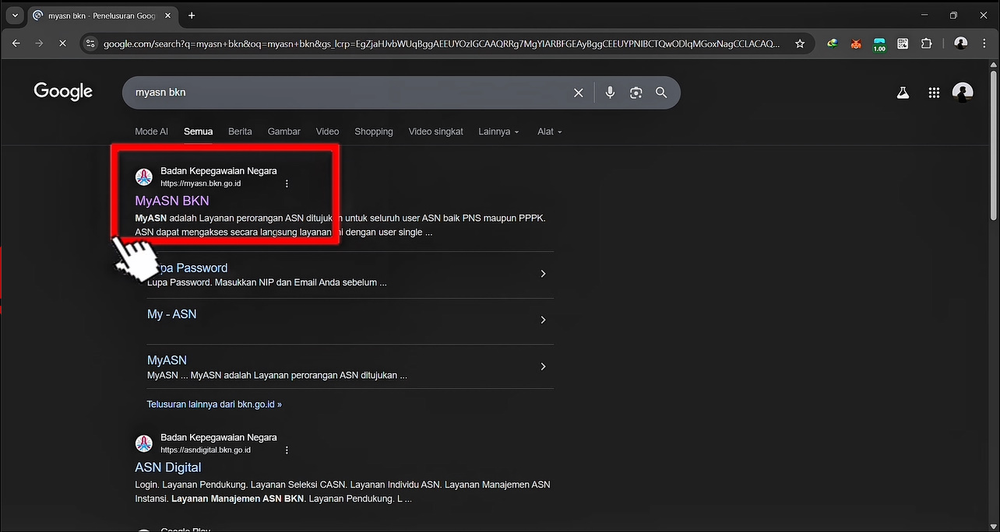
Langkah 1: Akses MyASN BKN melalui Google
1. Buka browser favorit Anda (Chrome, Edge, Firefox, Safari).
2. Ketik “MyASN BKN” di Google Search.
3. Pastikan memilih link resmi https://myasn.bkn.go.id.
4. Klik link tersebut untuk masuk ke halaman MyASN.
Tips: Gunakan browser versi terbaru agar tampilan halaman MyASN optimal, dan simpan bookmark untuk akses cepat di lain waktu. Hindari klik link mirip atau palsu.
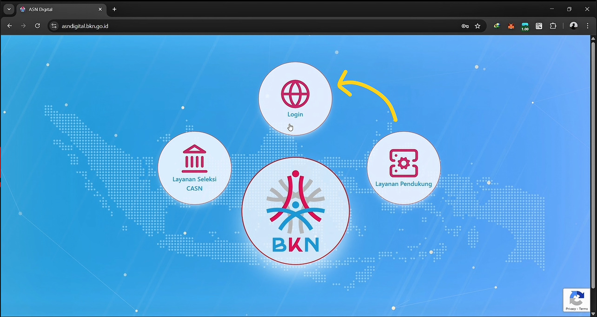
Langkah 2: Pilih Login
1. Pada halaman utama MyASN, perhatikan logo BKN di bagian atas.
2. Klik logo BKN lalu pilih Login untuk melanjutkan ke halaman login.
Tips: Pastikan tombol login resmi diklik agar aman dari phishing atau halaman palsu.
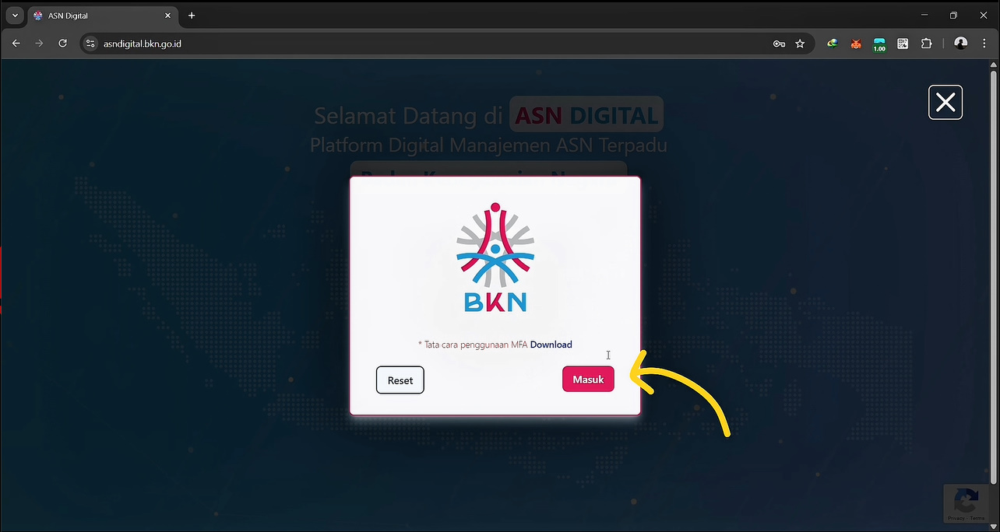
Langkah 3: Klik Masuk
1. Tekan tombol Masuk untuk melanjutkan ke halaman login akun MyASN.
Tips: Pastikan halaman login tampil penuh sebelum memasukkan akun, agar data tidak salah atau gagal masuk.
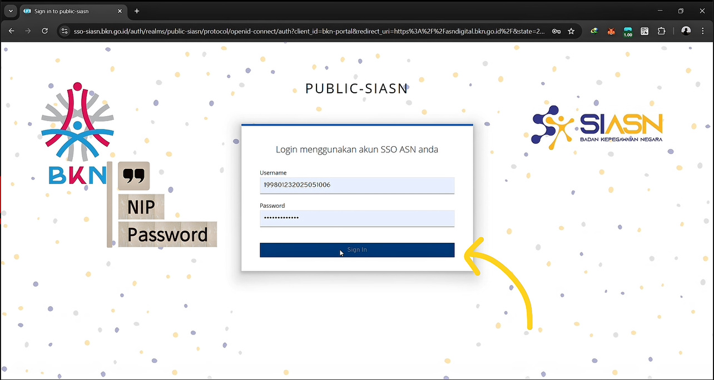
Langkah 4: Masukkan Username & Password
1. Isi NIP Anda sebagai username.
2. Masukkan password akun MyASN.
3. Klik Sign In untuk login ke dashboard.
Tips: Periksa kembali NIP dan password. Gunakan kombinasi huruf dan angka sesuai akun resmi. Jangan membagikan password ke orang lain.
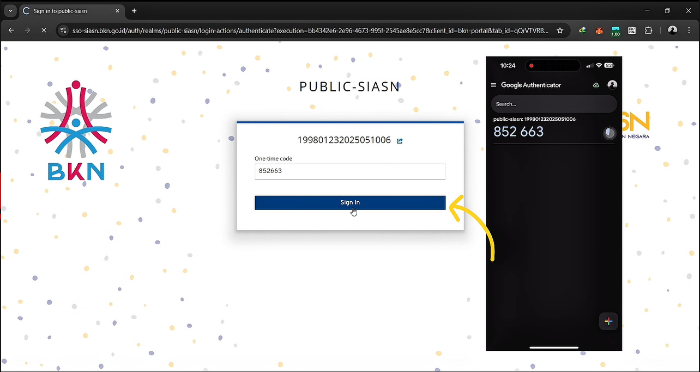
Langkah 5: Authenticator
1. Buka aplikasi Authenticator di ponsel.
2. Masukkan kode One-Time Code yang tampil.
Tips: Pastikan kode masih berlaku (biasanya 30 detik). Jika kode kadaluwarsa, tunggu kode baru muncul di aplikasi Authenticator.
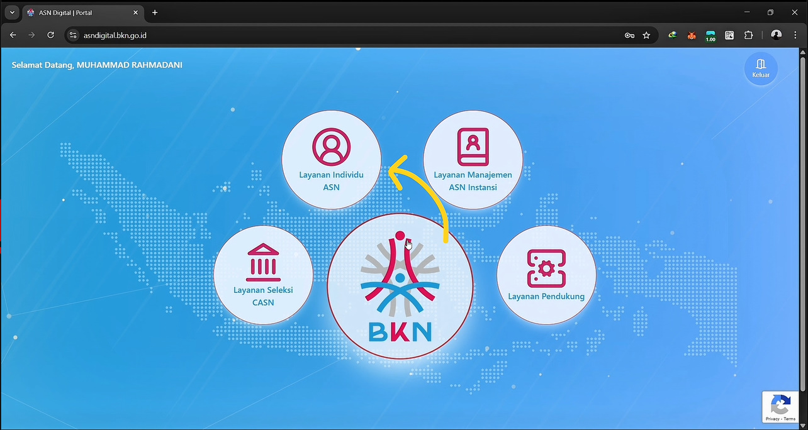
Langkah 6: Pilih Layanan Individu ASN
1. Setelah Sign In, pilih menu Layanan Individu ASN pada dashboard.
Tips: Pastikan menu yang dipilih sesuai agar fitur SKP dapat diakses dengan benar.
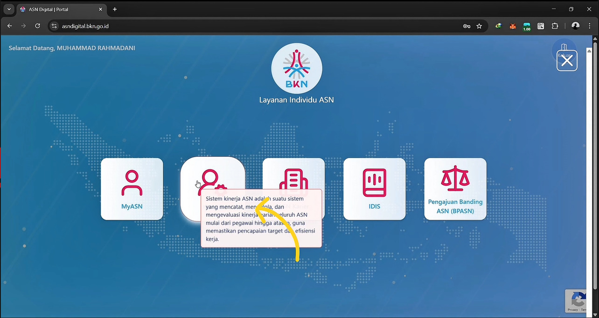
Langkah 7: Pilih Kinerja
1. Klik menu Kinerja untuk masuk ke halaman pengisian SKP.
Tips: Tunggu beberapa saat jika halaman loading lambat. Jangan klik berulang agar halaman tidak error.
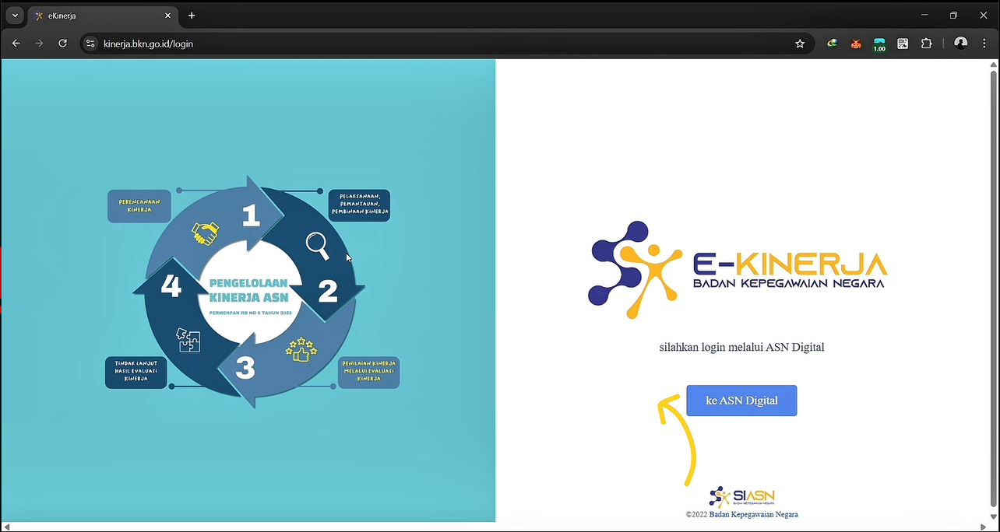
Langkah 8: Tunggu dan Pilih Layar
1. Tunggu sebentar jika halaman tidak otomatis masuk.
2. Klik latar putih atau pilih menu ASN Digital untuk melanjutkan.
Tips: Pastikan halaman benar-benar terbuka penuh sebelum melanjutkan langkah berikutnya, agar data SKP tampil lengkap.
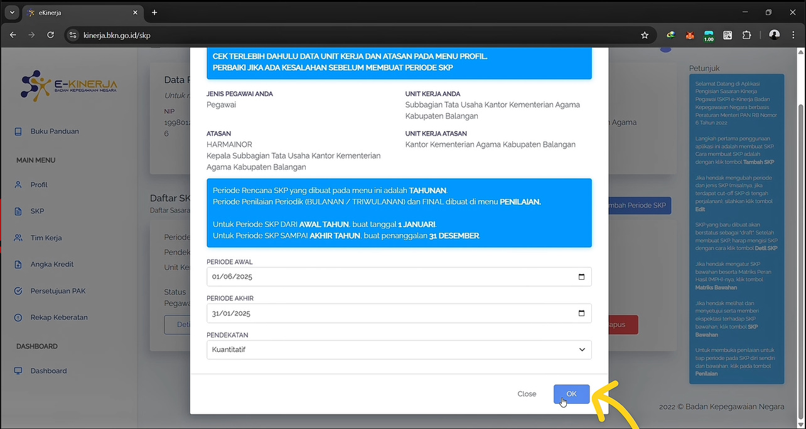
Langkah 9: Tambah Periode SKP
1. Masukkan periode awal dan periode akhir SKP.
2. Pilih pendekatan kuantitatif sesuai panduan.
Tips: Pastikan periode yang dipilih sesuai dengan RHK dan target SKP.
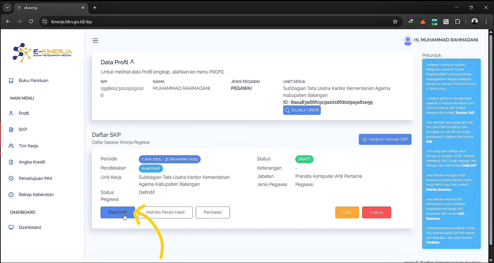
Langkah 10: Detail SKP
1. Lihat semua data SKP yang sudah tersedia.
2. Pastikan data sesuai.
Tips: Periksa kembali sebelum menambah RHK atau indikator.
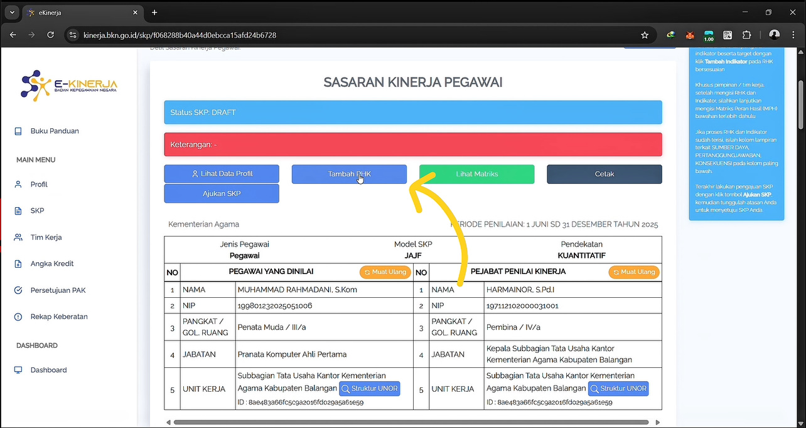
Langkah 11: Tambah RHK
1. Klik Tambah RHK untuk menambahkan Rencana Hasil Kerja.
2. Pastikan data sesuai dengan SKP.
Tips: Periksa data RHK yang ditambahkan agar sesuai target SKP.
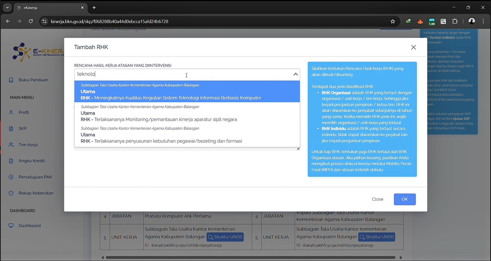
Langkah 12: RHK Atasan
1. Pilih RHK yang ditetapkan oleh atasan.
2. Pastikan RHK yang dipilih benar.
Tips: Selalu cocokkan dengan arahan atasan agar tidak terjadi kesalahan.
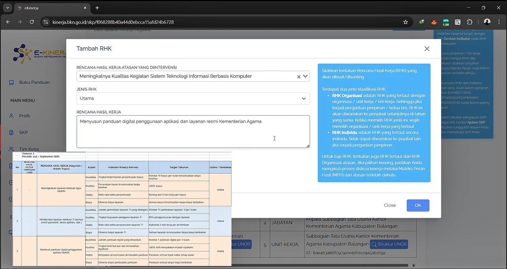
Langkah 13: Pilih Jenis RHK
1. Pilih jenis RHK: Utama atau Tambahan.
2. Pastikan sesuai dengan tugas yang diemban.
Tips: Pilih dengan cermat agar indikator dan target tidak salah.
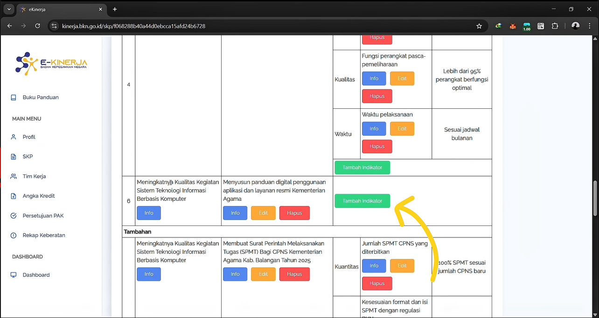
Langkah 14: Tambah Indikator
1. Klik tombol Tambah Indikator.
2. Tambahkan Indikator Kinerja Individu yang berisi Kuantitas, Kualitas, Waktu, Biaya.
Tips: Pastikan semua kolom indikator diisi lengkap dan sesuai tugas.
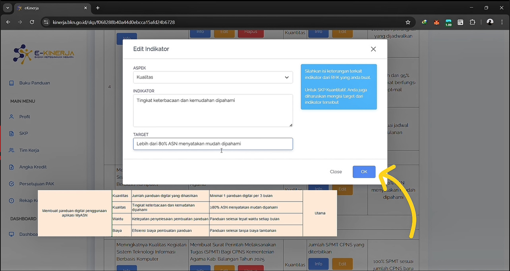
Langkah 15: Indikator Aspek Kualitas
1. Tentukan aspek kualitas dari indikator yang ditambahkan.
2. Pastikan target kualitas realistis dan terukur.
Tips: Cek kembali setiap target kualitas sebelum disimpan.
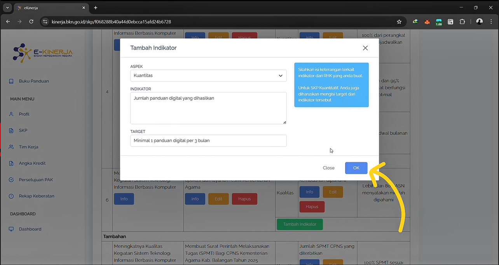
Langkah 16: Indikator Aspek Kuantitas
1. Tentukan aspek kuantitas dari indikator yang ditambahkan.
2. Pastikan target kuantitas realistis dan terukur.
Tips: Cek kembali setiap target kuantitas sebelum disimpan.
Langkah 17: Indikator Aspek Kualitas
1. Tentukan aspek kualitas dari setiap indikator yang telah ditambahkan.
2. Pastikan target realistis dan terukur.
Tips: Periksa kembali setiap target kualitas sebelum disimpan.
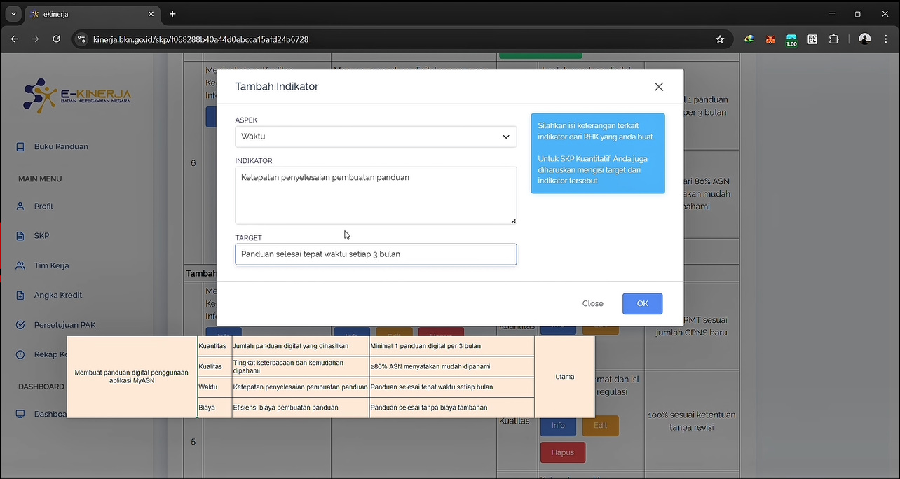
Langkah 18: Indikator Aspek Waktu
1. Tentukan aspek waktu untuk setiap indikator.
2. Pastikan target waktu realistis dan sesuai rencana kerja.
Tips: Periksa kembali target waktu agar tidak bertabrakan dengan indikator lain.
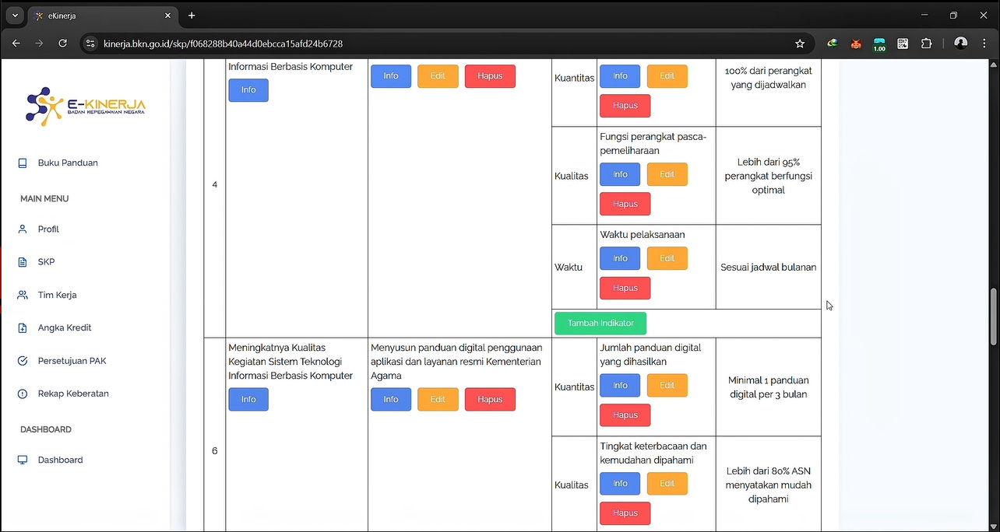
Langkah 19: Semua Indikator Terisi
1. Pastikan semua indikator (Kualitas, Kuantitas, Waktu, Biaya) telah terisi lengkap.
2. Periksa kembali agar tidak ada data yang kosong.
Tips: Data indikator harus lengkap sebelum menambahkan lampiran atau mengajukan SKP.
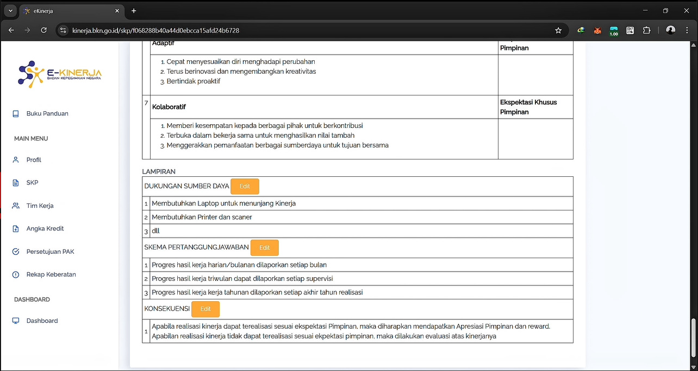
Langkah 20: Lampiran
1. Tambahkan lampiran sesuai arahan.
2. Lampiran berupa DUKUNGAN SUMBER DAYA, SKEMA PERTANGGUNGJAWABAN, dan KONSEKUENSI.
Tips: Pastikan lampiran jelas dan relevan dengan SKP yang diisi.
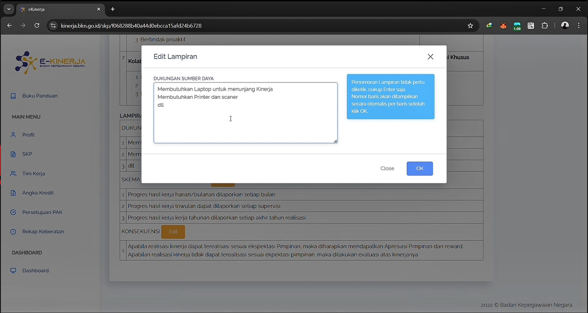
Langkah 21: Edit Lampiran
1. Edit lampiran sesuai arahan yang diberikan.
2. Pastikan isi lampiran lengkap dan sesuai format.
Tips: Periksa kembali isi lampiran sebelum menyimpan perubahan.
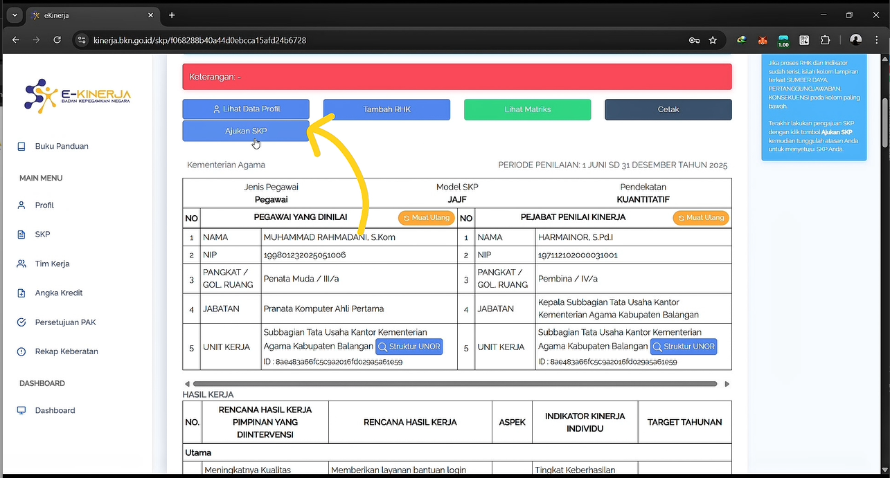
Langkah 22: Ajukan SKP
1. Klik tombol Ajukan SKP.
2. Tunggu hingga status SKP berubah menjadi Disetujui.
Tips: Jangan lakukan pengajuan berulang jika belum menunggu persetujuan.
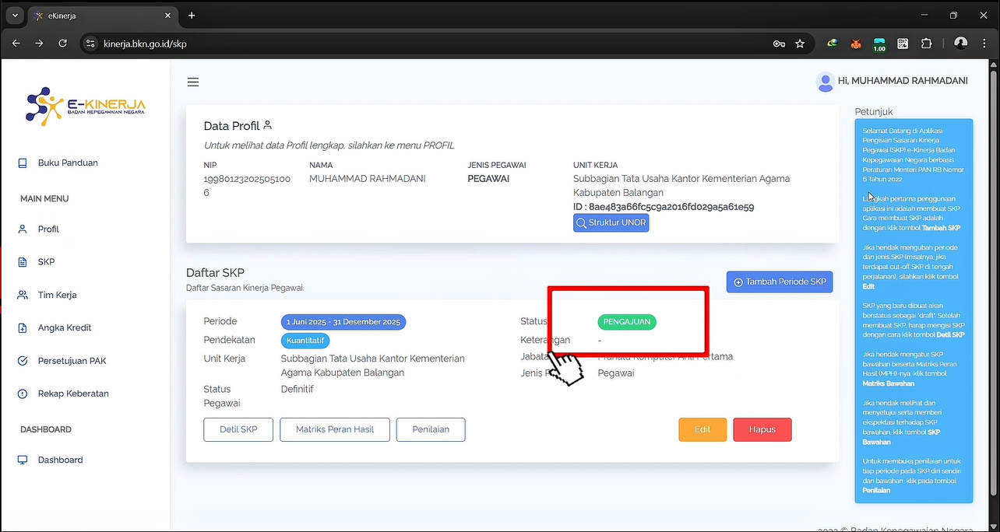
Langkah 23: Status Pengajuan
1. Periksa status pengajuan SKP.
2. Pastikan status pengajuan bukan draft dan sudah tercatat.
Tips: Pastikan status pengajuan sudah benar sebelum melanjutkan ke periode penilaian berikutnya.
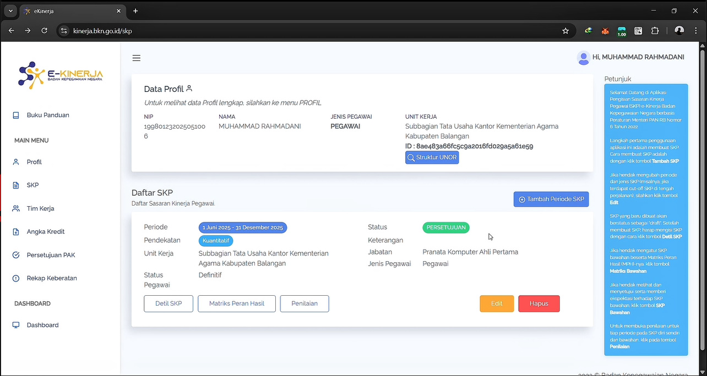
Langkah 24: Status Persetujuan
1. Tanda Disetujui menandakan SKP telah disetujui atasan.
2. Pastikan persetujuan tercatat sebelum menambahkan periode penilaian baru.
Tips: Konfirmasi persetujuan sebelum melanjutkan langkah berikutnya agar data akurat.
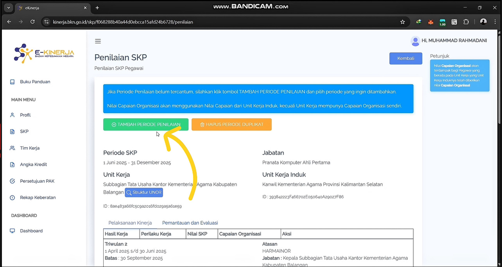
Langkah 25: Tambah Periode Penilaian
1. Klik tombol Tambah Periode Penilaian untuk membuat periode baru.
2. Siapkan data periode awal dan akhir.
Tips: Pastikan periode tidak bertabrakan dengan periode sebelumnya.
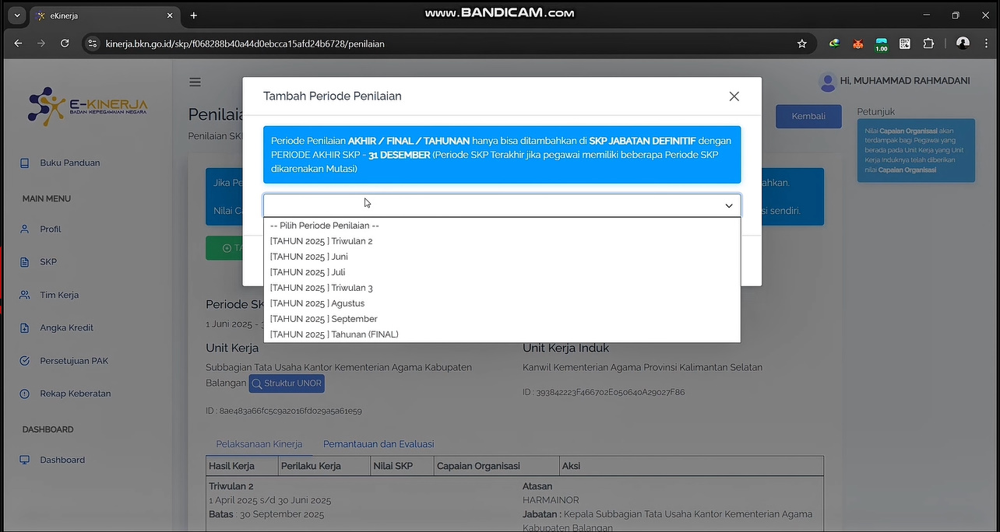
Langkah 26: Pilih Periode Penilaian
1. Pilih apakah penilaian dilakukan perbulan atau Triwulan sesuai kebutuhan dan arahan atasan.
2. Pastikan periode sesuai jadwal kerja.
Tips: Sesuaikan dengan arahan resmi agar data penilaian valid.
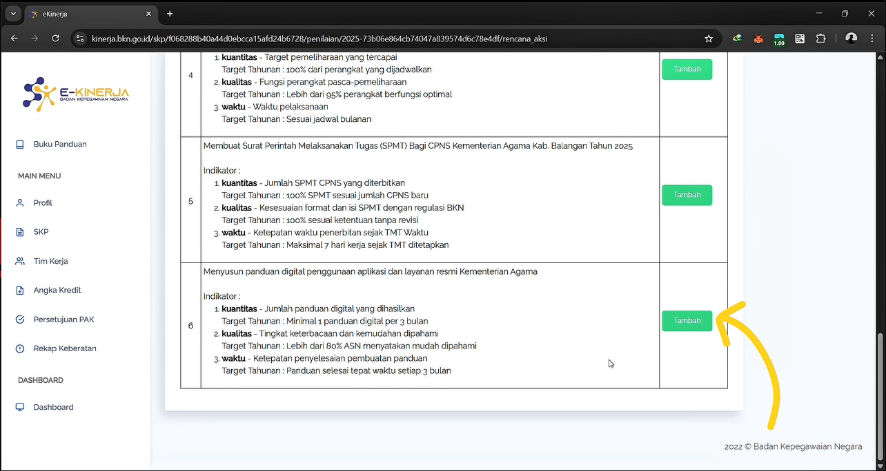
Langkah 27: Klik Tambah Rencana Aksi
1. Klik tombol Tambah Rencana Aksi untuk memasukkan kegiatan yang akan dinilai.
2. Pastikan semua rencana aksi relevan dengan SKP.
Tips: Gunakan rencana aksi yang jelas dan terukur agar mudah diikuti dan dinilai.
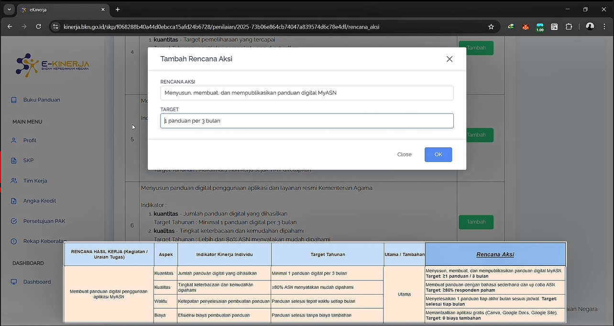
Langkah 28: Isi Rencana Aksi dan Target
1. Isi Rencana Aksi sesuai tugas yang harus dicapai.
2. Tentukan target untuk setiap aspek:
- Kuantitas
- Kualitas
- Waktu
- Biaya
Tips: Pastikan target realistis, terukur, dan sesuai kemampuan tim.
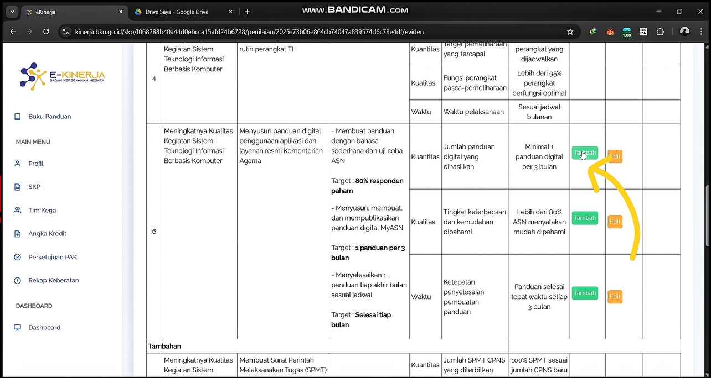
Langkah 29: Tambah Bukti Dukung
1. Klik tombol Tambah untuk memasukkan bukti dukung.
2. Bukti dukung dapat berupa dokumen, foto, atau link pendukung.
Tips: Pastikan bukti dukung relevan dan dapat dipertanggungjawabkan.
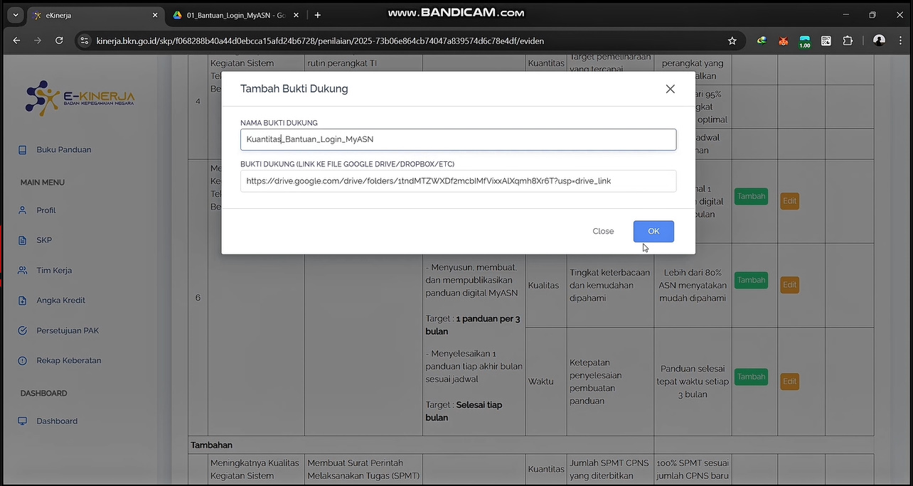
Langkah 30: Nama Bukti Dukung dan Link
1. Isi nama bukti dukung.
2. Masukkan link atau dokumen pendukung.
3. Sesuaikan aspek Kuantitas, Kualitas, Waktu, Biaya jika ada.
Tips: Pastikan link dapat diakses dan dokumen valid agar bukti diterima.
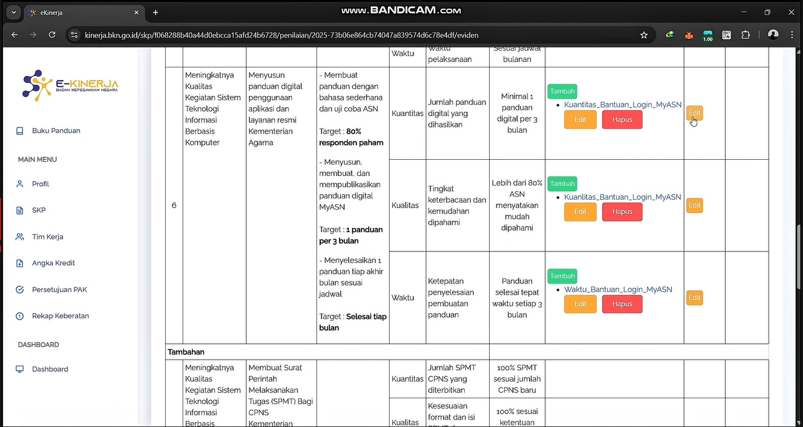
Langkah 31: Edit Realisasi
1. Edit realisasi sesuai progress pekerjaan.
2. Pastikan semua indikator terupdate dan sesuai target.
Tips: Update secara berkala agar laporan tetap akurat dan bisa dipertanggungjawabkan.
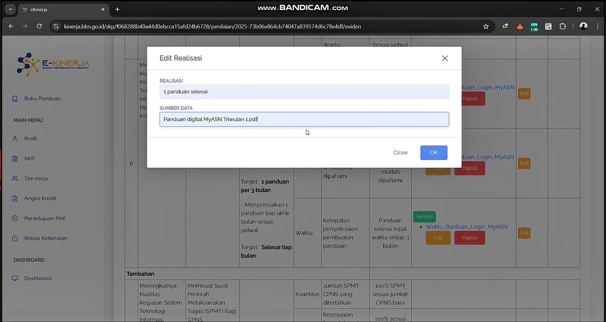
Langkah 32: Realisasi & Sumber Data
1. Isi realisasi sesuai hasil kerja.
2. Masukkan sumber data yang valid sebagai bukti pencapaian.
Tips: Gunakan dokumen resmi atau catatan valid agar bukti dapat dipertanggungjawabkan.